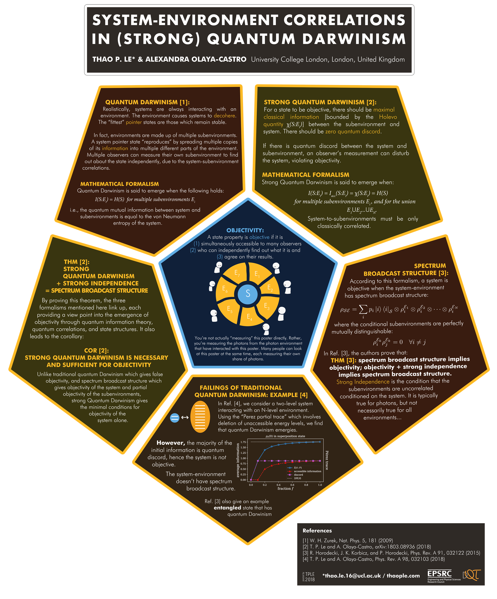

The following poster was presented at the 684. WE-Heraeus-Seminar Advances in open systems and fundamental tests of quantum mechanics, Bad Hannof, on the 2th - 5th December 2018. The corresponding papers for this work are Strong Quantum Darwinism and Strong Independence is equivalent to Spectrum Broadcast Structure and Objectivity (or lack thereof) Comparison between predictions of quantum Darwinism and spectrum broadcast structure.

University College London, London, United Kingdom
*thao.le.16@ucl.ac.uk
A state property is objective if it is (1) simultaneously accessible to many observers (2) who are able to independently find out what it is and (3) agree on their results.
The figure consists of a blue system S is surrounded by different yellow-coloured subenvironments labelled E1, E2,...E7. The system and subenvironments are interacting with each other. Seven observers surround the subenvironments, observing the sub-environments.
You're not actually "measuring" this poster directly. Rather, you're measuring the photons from the photon environment that have interacted with this poster. Many people can look at this poster at the same time, each measuring their own share of photons.
Realistically, systems are always interacting with an environment. The environment causes systems to decohere. The "fittest" pointer states are those which remain stable.
In fact, environments are made up multiple subenvironments. A system pointer state "reproduces" by spreading multiple copies of its information into multiple different parts of the environment. Multiple observers can measure their own subenvironment to find out about the state independently, due to the system-subenvironment correlations.
Quantum Darwinism is said to emerge when the following holds:
\(I(S:E) = H(S)\) for multiple subenvironments \(E_i\)
i.e., the quantum mutual information between system and subenvironments is equal to the von Neumann entropy of the system.
For a state to be objective, there should be maximal classical information [bounded by the Holevo quantity \(\chi(S:E_i)\)] between the subenvironment and the system. There should be zero quantum discord.
If there is quantum discord between the system and subenvironment, an observer's measurement can disturb the system, violating objectivity.
Strong Quantum Darwinism is said to emerge when:
\(I(S:E_i) = I_{acc}(S:E_i) = \chi(S:E_i) = H(S) \) for multiple subenvironments \(E_i\) and for the union \(E_1 \cup E_2 \ldots \cup E_N \).
System-to-subenvironments must only be classicaly correlated.
According to this formalism, a system is objective when the system-environment has spectrum broadcast structure:
\(\rho_{SE} = \sum_i p_i |i\rangle\langle i|_S \otimes \rho_i^{E_1} \otimes \rho_i^{E_2} \otimes \cdots \otimes \rho_i^{E_N} \)
where the conditional subenvironments are perfectly mutually distinguishable:
\(\rho_i^{E_k} \rho_j^{E_k} = 0 \forall i\neq j\)
In Ref. [3], the authors prove that:
THM [3]: spectrum broadcast structure implies objectivity; objectivity + strong independence implies spectrum broadcast structure.
Strong independence is the condition that the subenvironments are uncorrelated conditioned on the system. It is typically true for photons, but not necessarily true for all environments...
Figure: A blue system with two levels, and a yellow environment with nine levels. A double-headed arrow between the two represents their interaction.
In Ref. [4], we consider a two-level system interacting with an N-level environment. Using the "Perez partial trace" which involves deletion of unaccessible energy levels, we find that quantum Darwinism emergies.
However, the majority of the initial information is quantum discord, hence the system is not objective.
Figure: A plot of mutual information between system and fragment \(I(S:F)\), accessible information, discord, and twice-the-system-entropy \(2 H(S)\), as a function of environment fraction (which corresponds to fragment size). The environment begins in a pure superposition state, and the plot employs the Perez trace. At small fragment sizes, the mutual information rises quickly and then slows down upon approaching the maximum information (twoce-the-system-entropy). The accessible information is zero at small fragment sizes, and grows slowly afterwards to approach its maximum value (system-entropy). The discord quickly reaches its maximum at small fragment sizes.
The system-environment doesn't have spectrum broadcast structure.
Ref. [3] also give an example entangled state that has quantum Darwinism.
By proving this theorem, the three formalisms mentioned here link up, each providing a view point into the emergence of objectivity through quantum information theory, quantum correlations, and state structures. It also leads to the corollary:
Unlike traditional quantum Darwinism which gives false objectivity, and spectrum broadcast structure which gives objectivity of the system and partial objectivity of the subenvironments, strong Quantum Darwinism gives the minimal conditions for objectivity of the system alone.
[1] W. H. Zurek, Nat. Phys. 5, 181 (2009)
[2] T. P. Le and A. Olaya-Castro, arXiv:1803.08936 (2018)
[3] R. Horodecki, J. K. Korbicz, and P. Horodecki, Phys. Rev. A 91, 032122 (2015)
[4] T. P. Le and A. Olaya-Castro, Phys. Rev. A 98, 032103 (2018)
{kind=link}